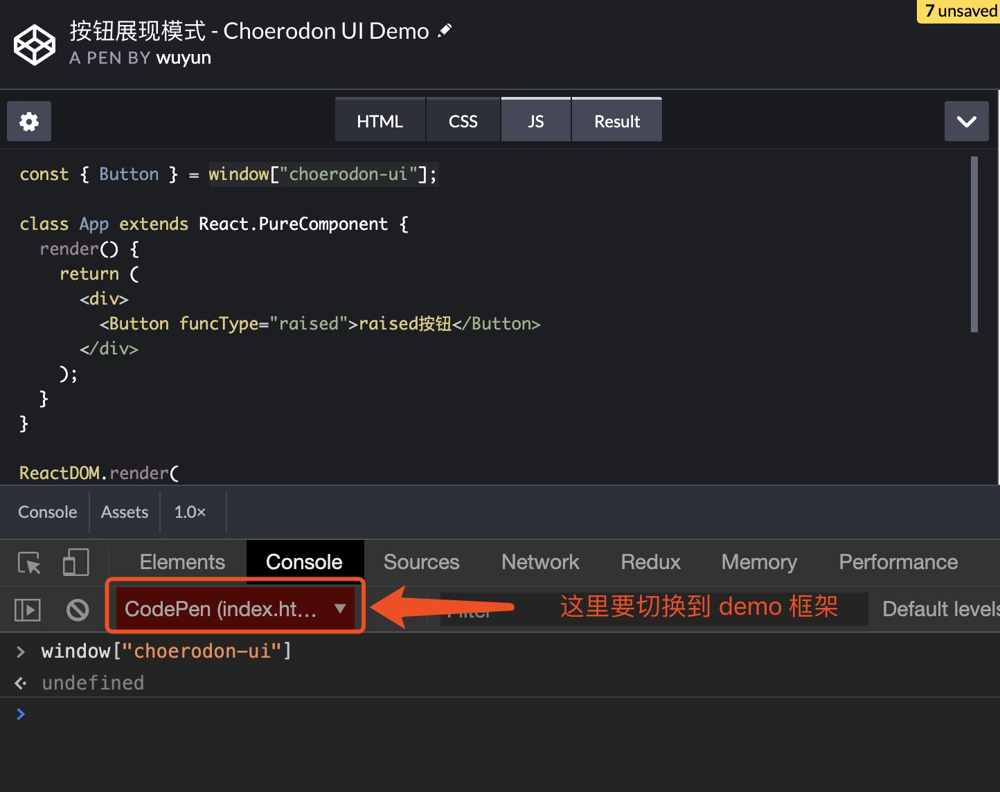
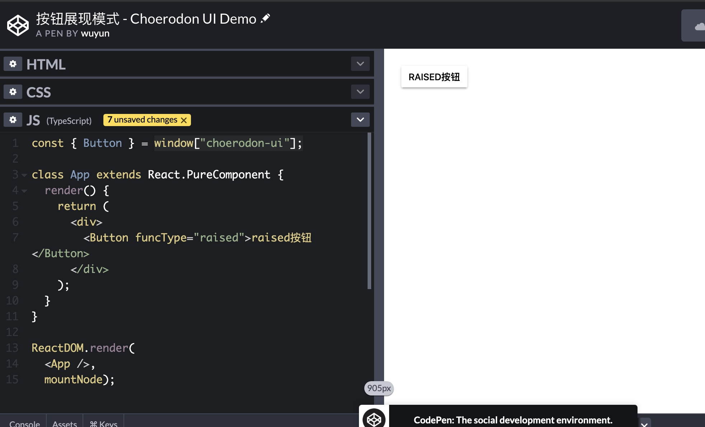

解决 c7n-ui codepen 在线代码演示 ，通过拿不到组件库。
当我们打开 https://choerodon.github.io/choerodon-ui/ 点击网站 codepen 在线预览，代码无法预览。
codepen 的依赖都是通过添加 <script src="https://unpkg.com/choerodon-ui@0.8.49/dist/choerodon-ui-with-locales.js"></script>
把组件库引入到浏览器环境中。
由于 codepen 环境运行的代码只是经过 babel 简单处理一下， 但是不不支持 import 语法，所以打开 codepen 之后。 import 语句：
import { Button } from 'choerodon-ui';
会被转换成
const { Button } = window["choerodon-ui"];
所以 codepen 引入的依赖库都是需要挂载到 global 全局对象上面,通过全局对象引用。
类似这样 window.React、window.Vue、window["choerodon-ui"] 在代码中通过 全局对象。
必须保证 https://unpkg.com/choerodon-ui@0.8.49/dist/choerodon-ui-with-locales.js 中有挂载语句：
window["choerodon-ui"] = ...
我们之间输出一下 window["choerodon-ui"] 对象 测试一下:

可以看到 window["choerodon-ui"] 值为 undefined
然后我们先来看一下 经过 webpack 编译后输出的 https://unpkg.com/choerodon-ui@0.8.49/dist/choerodon-ui-with-locales.js 内容：
/*!
*
* choerodon-ui v0.8.49
*
*/
(function webpackUniversalModuleDefinition(root, factory) {
if(typeof exports === 'object' && typeof module === 'object')
module.exports = factory(require("mobx"), require("moment"), require("react"), require("react-dom"));
else if(typeof define === 'function' && define.amd)
define(["mobx", "moment", "react", "react-dom"], factory);
else if(typeof exports === 'object')
exports["choerodon-ui-with-locales"] = factory(require("mobx"), require("moment"), require("react"), require("react-dom"));
else
root["choerodon-ui-with-locales"] = factory(root["mobx"], root["moment"], root["React"], root["ReactDOM"]);
})(window,function(__WEBPACK_EXTERNAL_MODULE_mobx__, __WEBPACK_EXTERNAL_MODULE_moment__, __WEBPACK_EXTERNAL_MODULE_react__, __WEBPACK_EXTERNAL_MODULE_react_dom__) {
// ...
// return ...
});
我们可以看到这里有一个 root["choerodon-ui-with-locales"] 这里 root 就是全局对象 window, 但是这里挂载的字段不对。应该是choerodon-ui，为什么会这样了。
其实这是一种 webpack 的输出 dist 机制, 当检测到当前是浏览器环境时，会把整个组件库通过 entry name 挂载到全局对象上面。 entry name 就是在 webpack entry 配置来指定的， 比如：
{
entry: {
'abcd': './src/abcd/index.js',
}
}
这里最后生成的 dist 中 abcd 就是 entry name, 如果 entry 配置的值是 数组 或者 字符串， 没有指定 entry ， 那么 entry 就会变成 main。
我们看一下 c7n-ui webpack 配置：
function addLocales(webpackConfig) {
let packageName = `${pkg.name}-with-locales`;
let packageNamePro = `${pkg.name}-pro-with-locales`;
if (webpackConfig.entry[`${pkg.name}.min`]) {
packageName += '.min';
}
if (webpackConfig.entry[`${pkg.name}-pro.min`]) {
packageNamePro += '.min';
}
webpackConfig.entry[packageName] = './index-with-locales.js';
webpackConfig.entry[packageNamePro] = './index-pro-with-locales.js';
webpackConfig.output.filename = '[name].js';
}
这里多输出了两个包含多语言数据的包。但是也修改了 entry name。 所以导致 window["choerodon-ui"] 变成了 window["choerodon-ui-with-locales"],那么如何修改把它修复这个问题呢。
既然是 webpack 的锅， 所以我去 webpack 官网找了一圈， 最终还是没有找到修改 dist 文件中的 entry name 的方法。
最后想了一下, dist 的内容不就是文件内容的文本替换吗。 直接写一个 webpack plugins 就可以解决这个问题 ， 最后通过开发 webpack plugin 修改 webpack 输出 dist 指定生成的 global name
webpack plugin 代码实现:
const webpackConfig = {
plugins:[
{
apply: compiler => {
const replaceLibraryConfigList = [
{
from: /choerodon-ui(-with-locales(\.min)?)/gi,
to: 'choerodon-ui',
},
{
from: /choerodon-ui-pro(-with-locales(\.min)?)/gi,
to: 'choerodon-ui/pro',
},
];
compiler.hooks.compilation.tap('compilation', compilation => {
const { mainTemplate, chunkTemplate } = compilation;
// eslint-disable-next-line no-restricted-syntax
for (const template of [mainTemplate, chunkTemplate]) {
template.hooks.renderWithEntry.tap('UmdMainTemplatePlugin', (source, entry) => {
const entryName = entry.name;
const findReplaceCfg = replaceLibraryConfigList.find(replaceCfg => {
return replaceCfg.from.test(entryName);
});
if (findReplaceCfg) {
let newSource = source;
let startPos = -1;
// eslint-disable-next-line no-cond-assign
while (
(startPos = newSource
.source()
.indexOf(entryName, startPos > 0 ? startPos : undefined)) !== -1
) {
newSource = new ReplaceSource(newSource);
newSource.replace(startPos, startPos + entryName.length - 1, findReplaceCfg.to);
}
return newSource;
}
return source;
});
}
});
},
}]
};
这个插件的原理很简单， 就是通过正则表达式找到 window["choerodon-ui-with-locales"] 替换成 window["choerodon-ui"]
处理之后生成的 dist：
/*!
*
* choerodon-ui v0.8.56
*
*/
(function webpackUniversalModuleDefinition(root, factory) {
if(typeof exports === 'object' && typeof module === 'object')
module.exports = factory(require("mobx"), require("moment"), require("react"), require("react-dom"));
else if(typeof define === 'function' && define.amd)
define(["mobx", "moment", "react", "react-dom"], factory);
else if(typeof exports === 'object')
exports["choerodon-ui"] = factory(require("mobx"), require("moment"), require("react"), require("react-dom"));
else
root["choerodon-ui"] = factory(root["mobx"], root["moment"], root["React"], root["ReactDOM"]);
})(window, function(__WEBPACK_EXTERNAL_MODULE_mobx__, __WEBPACK_EXTERNAL_MODULE_moment__, __WEBPACK_EXTERNAL_MODULE_react__, __WEBPACK_EXTERNAL_MODULE_react_dom__) {});
到此，问题解决：
